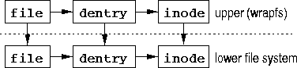
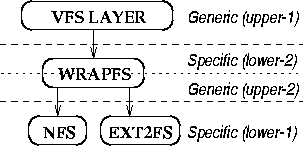

初识 WrapFS
WrapFS 是一种堆栈式文件系统，堆栈式文件系统的一个基本功能就是把操作和参数转换成底层文件系统的操作和参数。这就意味着我们会在 WrapFS 层上创建一个文件对象后会在底层文件对应着创建一个对象，要说明的是，WrapFS 层的这个文件对象只保存在内存里面，断电后会消失，真正文件里面的数据保存在底层文件系统里面。

WrapFS 的意义
从 WrapFS 的发明者有这样的回答：
- WrapFS 是一种理想的小模板，可以修改，逐步改造出新的文件系统功能。
- WrapFS 可以当作一种方法，用于测试 Linux VFS 超强的堆叠能力。
- WrapFS 可以当作学习 VFS，或学习如何写新的 Linux 文件系统的一个好工具。
- 在 Android 里面，采用的是 FUSE 文件系统，FUSE 文件系统的最终实现是在用户空间，这样导致一个文件操作会两次跨越用户空间和内核空间，导致效率降低，但是 WrapFS 不会有这个问题，其性能接近底层文件系统的实际性能.

继承角度看 WrapFS
从面向对象的角度来看，WrapFS 继承自底层文件系统，并且新增加了一下类成员，重写了一些 VFS 层的方法。
文件系统 mount
WrapFS 的 mount 方法为:
1 | mount -t wrapfs /some/lower/path /mnt/wrapfs |
这里 /some/lower/path 就是底层的文件系统的路径, /mnt/wrapfs 是挂载点的路径，在内核里面可以通过 kern_path() 获取路径所对应的 sturct path 结构，path 结构里面包含了文件系统 mount 时的 vfsmount 信息和挂载点路径的 dentry 信息，struct path 定义如下:
1 | struct path { |
其中struct vfsmount 里面包含了底层文件系统的挂载点的 dentry 和 super block。通过 super block 和 dentry 结构，我们能获得操作底层文件系统的方法。这里来关注下填充 struct super_block 的方法，只列出了主要的代码。
1 | static int wrapfs_read_super(struct super_block *sb, void *raw_data, int silent) |
WrapFS VFS 操作的一般方法
堆栈操作有两种类型：创建新 VFS 对象和不创建新 VFS 对象。
- 下面是不创建 VFS 的方法.
不创建 VFS 文件对象的方法仅仅传递 VFS 对象到底层，并返回可能的错误信息给 VFS ,比如 link 和 ulink 方法，下面是不创建新对象的代码，这个代码比较简单，就是调用 get_lower_dentry() 获取底层目录的 inode 对象，然后调用底层目录的 inode 对象的 unlink 方法解除 link。
1 | int wrapfs_unlink(struct inode *dir, struct dentry *dentry) |
- 下面代码展现的是重新创建新 VFS 对象的方法 create。
主要流程就是先调用 vfs_create 创建底层文件系统对象，再调用 wrapfs_interpose() 创建自已的文件系统对象。
1 | int wrapfs_create(struct inode *dir, struct dentry *dentry, int mode) |
这个函数调用 wrapfs_lower_inode() 来获取底层 dir 的 inode，下面是该函数的实现
1 | static inline struct inode *wrapfs_lower_inode(const struct inode *i) |
wrapfs_I(i) 是一个宏，定义如下
1 | static inline struct wrapfs_inode_info *wrapfs_I(const struct inode *inode) |
再来看看 struct wrapfs_inode_info 的定义：
1 | struct wrapfs_inode_info { |
lower_inode 是 WrapFS 层文件对应的底层文件的 inode，vfs_inode 是 WrapFS 层的 inode。那 lower_inode 是什么时候设置的?在后面会看到 WrapFS 在创建文件的时候会设置文件对应的 lower_inode。那么 WrapFS 的根目录的 lower_inode 是在什么时候设置的呢？前面有提到过 mount 的时候会获取 mount 点的 dentry 方法，其实根目录的 lower_inode 也是在 mount 时设定的。获取到底层文件系统的 inode 结构后，我们就可以在底层文件系统上创建文件了。这个时候底层的文件时创建好了，但是 WrapFS 层的文件还没有创建好，wrapfs_interpose() 就是做这个事情的：
1 | int wrapfs_interpose(struct dentry *dentry, struct super_block *sb, |
wrapfs_iget() 创建 WrapFS 层的 inode，并绑定对应的底层文件的 inode;
1 | struct inode *wrapfs_iget(struct super_block *sb, struct inode *lower_inode) |
WrapFS 创建文件的过程就是分别在底层文件系统和本层创建一个文件，然后重新设置一下本层文件的 inode 属性以及 inode 的方法和 file_operation 等方法，其它文件操作的方法和上面介绍的两种方法类似，就不一一介绍了。
WrapFS 和链接的区别
WrapFS 和链接是有很大区别的，WrapFS 是一种文件系统，有自己的 VFS 数据结构，他的数据结构保存在底层文件系统的某个路径，他把底层的文件系统改造一番后提供给用户，把用户创建的文件改造一番后写到底层文件系统上面。而硬链接是两个文件对于着同一个 inode 以及数据 block；软链接则只是一个文件，有着自己的数据块和 inode，文件数据里面存放着被链接文件的路径。
This is copyright.